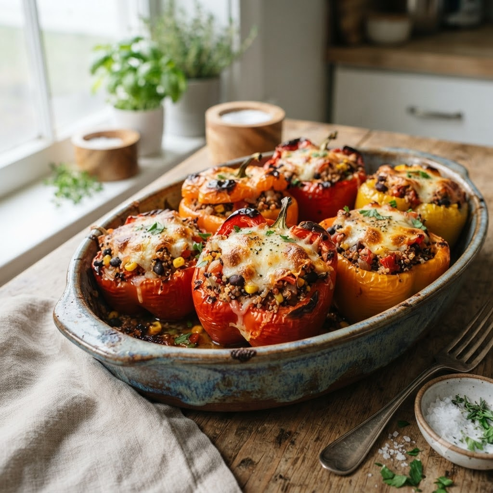

Stuffed Bell Peppers

Stuffed Bell Peppers
Airfryer – Bake 180°C 16 min — Serves 4
🔥 Airfryer🍽 Serves 4
Ingredients
- 4 bell peppers, tops cut & seeded
- 1 cup cooked rice
- 1/2 cup boiled corn or peas
- 1/2 cup grated cheese
- 1 tsp mixed herbs
- Salt & pepper to taste
Method
1Preheat: Preheat the Airfryer to 180°C for 4 minutes before adding the food to the basket.
2Mix rice, corn, half the cheese, herbs, salt and pepper.
3Stuff the mixture into the peppers and top with remaining cheese.
4Place upright in the basket.
5Bake at 180°C for 16 minutes until peppers soften and cheese melts.